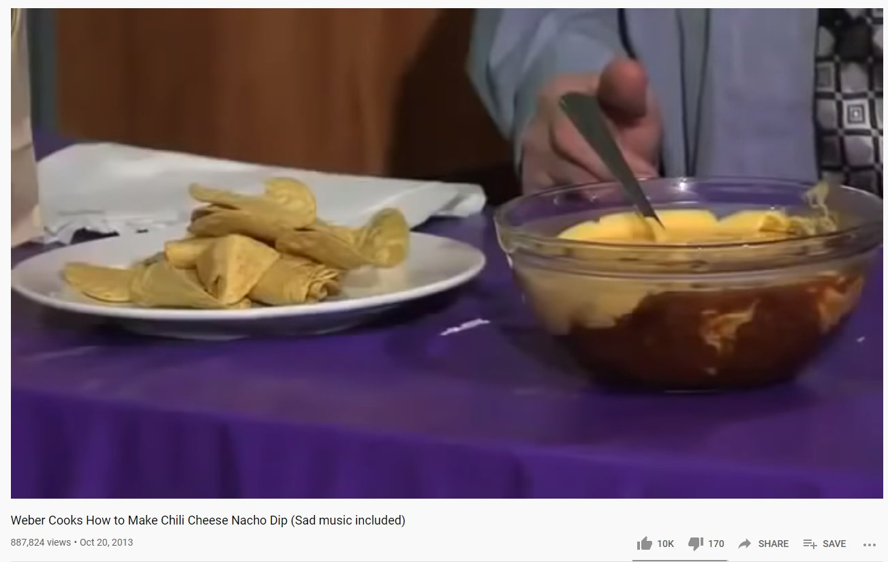

Chilli Cheese Nachos
Cooked best with sad music playing

Description
Have you ever wanted to make a delicious plate of chilli cheese nachos to quell the stress eating binge your depression takes you on? Well fret not, we have you covered with a step-by-step guide to makeing the best depressive chilli cheese nachos!
Made famous by the YouTube channel Weber Cooks, these nachos take the disguise of what appear to be your typical plate of loaded nachos. But, if you dig deeper, they have magic powers that are made to combat your late binge eating habits when work or life has you stressed out.
WARNING: these nachos are not be confused with your standard nachos. These will have no impact on your health if you are of sound mind and able bodied.
Ingrediants (serving 3 to 6 people)
- Nacho chips
- Canned pre-made chilli for simplicity(chilli beans and your favorite sauce works as well)
- A can of your favorite flavor of Nacho Cheese (can be substituded for liquified cheddar cheese as well
Recipe
- Start with taking your can of chilli (or beans & sauce), and carefully opening them with a can opener.
- Dump the chilli into a large, microwavable bowl.
- Take your liquified cheese container and open it with their a can opener or twist the top off (if applicable), and place the cheese into a seperate large, microwavable bowl.
- Microwave the cheese for 4 1/2 minutes on High.
- When the cheese is done, remove the bowl from the microwave and set it to the side.
- Next, microwave your bowl of chilli for 4 1/2 minutes on High as well.
- When finished, take both the cheese and the chilli and combine them in a large serving bowl.
- Take the nacho chips and add them to a seperate serving plate.
- Let cool for a few minutes, and enjoy your own chilli cheese nachos!